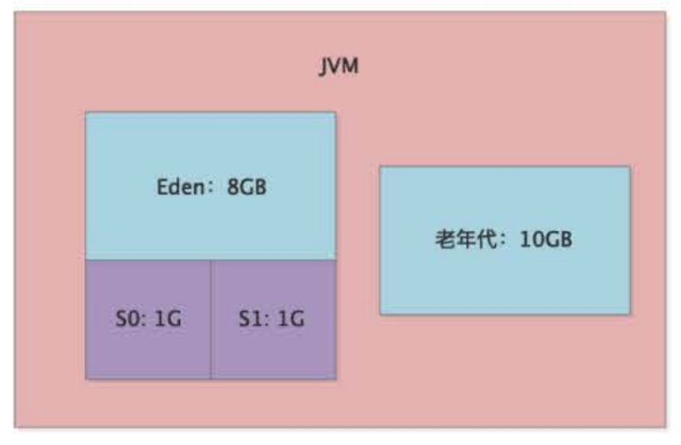
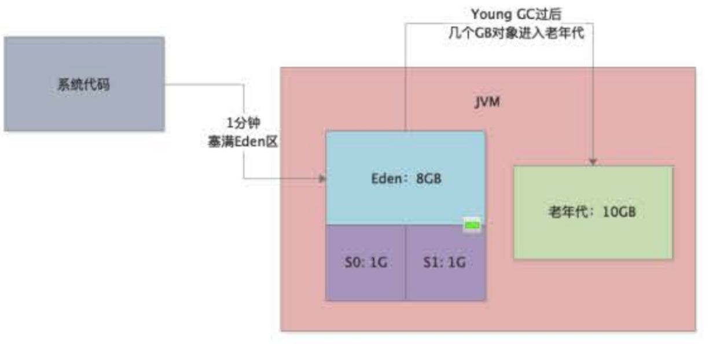
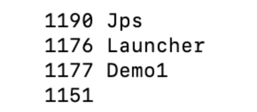
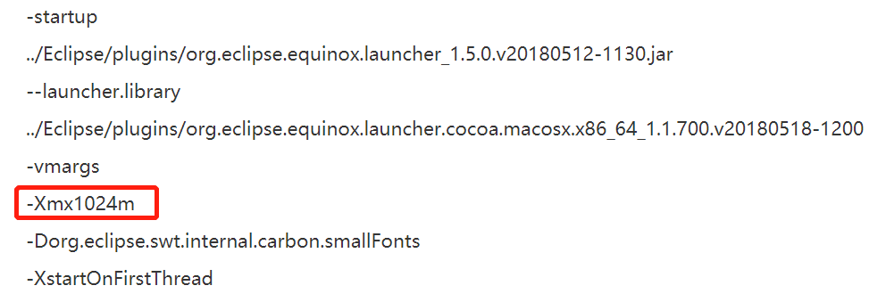
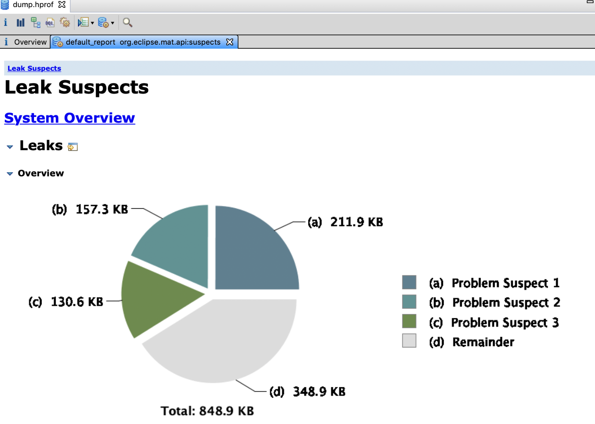
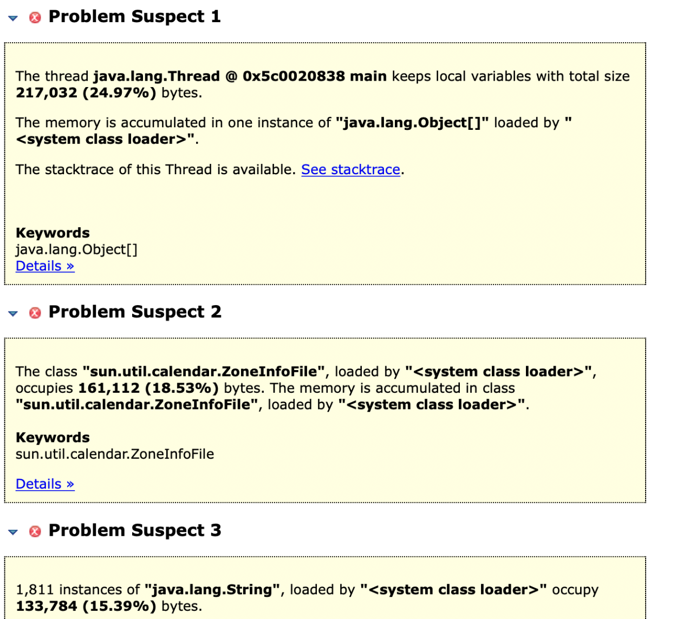
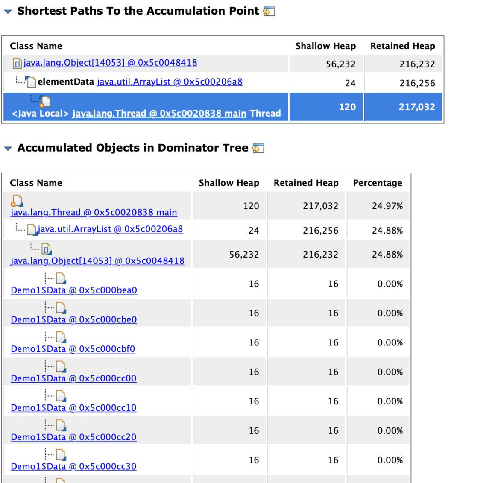
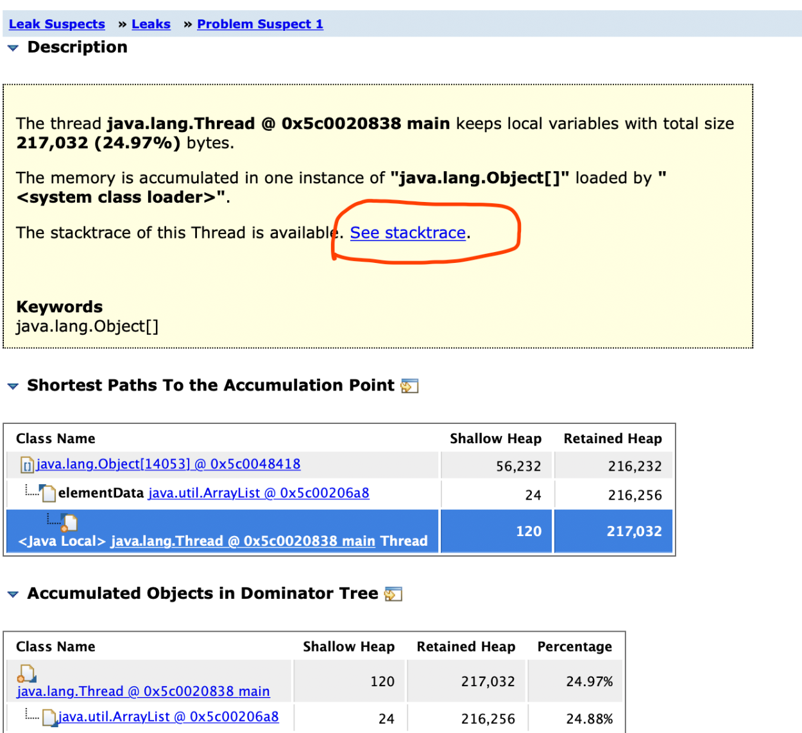
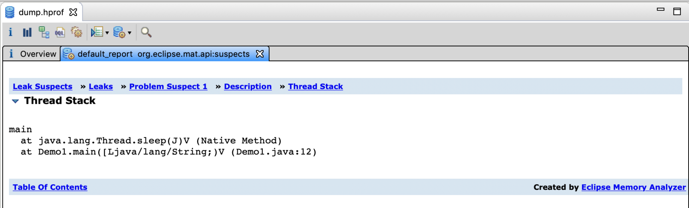

我们通过jstat进行分析，发现Full GC非常频繁，基本上每隔两分钟就会执行一次，而且每次Full GC的时间长达10秒。
系统的JVM内存模型如下，当时给Java堆内存分配了20G，其中年轻代10G，老年代10G：

事实上，虽然分配了那么大的内存空间给年轻代和老年代，但是通过jstat分析发现，Eden区大概1分钟就会被占满，然后触发一次Young GC，而且Young GC过后有几个G的对象都会存活并进入老年代：

这说明系统代码运行时会产生大量对象，经常在1分钟过后就塞满Eden，然后会触发Young GC，但是由于程序处理极慢，导致大量存活对象Survivor区无法容纳，从而进入老年代。
由于老年代的内存有10GB，所以在没有采用G1的情况下，一次Full GC的回收速度很慢，长达10s，这就直接导致了工作线程无法正常运行，对于用户来说就是系统卡死。
通过上述分析，我们可以判断一定是程序代码的某处在不断生成各种对象，导致系统加载过多数据到内存中。所以，要对这个案例进行优化，就必须分析到底是程序哪里在源源不断地创建对象。
我们可以先通过jmap生成一个JVM内存快照文件，然后通过MAT进行分析。下面我们通过一段示例代码来排查：
public class Demo1{
public static void main(String[] args){
List<Data> datas = new ArrayList<>();
for(int i=0; i<10000; i++){
datas.add(new Data());
}
Thread.sleep(1 * 60 * 60 * 1000);
}
}
首先执行上述这段程序，通过jps获取JVM进程ID——1177：

然后执行jmap命令导出JVM内存快照：jmap -dump:live,format=b,file=dump.hprof 1177
线上dump出来的内存快照一般都有几个G，比如我们上述的程序就有8个多G的内存快照，所以运行MAT时，务必将MemoryAnalyzer.ini中的启动堆大小设置为8G以上：

启动MAT后，选择“Leak Suspects”，也就是内存泄漏分析，接着我们会看到下面的图：


“Problem Suspect1”告诉我们：main线程通过局部变量引用占据内存24.97%的对象，而且占据内存的是一个java.lang.Object[]数组。
我们可以通过“Detail”链接进去查看这个数组到底是什么，通过这个详细说明，我们可以看到mian线程中引用的是一个java.util.ArrayList，里面的每个元素都是Demo1$Data对象：

然后，知道了这些不断创建的对象是什么后，我们还希望知道程序是在哪段代码创建了这些对象。如下图所示，先点击页面中的“See stacktrace”链接，就会进入一个线程执行代码堆栈的调用链：


可以看到，问题定位到了Demo1类的main方法内的第12行，最终发现是这个线程执行了String.split()方法导致产生了大量的对象。
为什么String.split()方法会造成内存泄漏呢？
在JDK1.6以前，String.split()方法对于“Hello World Ressmix”这种字符串，底层是基于一个数组来存放的，比如[H,e,l,l,o, ,W,o,r,l,d, ,R,e,s,s,m,i,x]，当基于空格切割时，比如“Hello”，不会存到一个新的数组中，而是采用偏移量来表明是对应原数组中的那一段。
但是JDK1.7以后，每个切割出来的子字符串都对应一个全新的数组。
所以，上述案例中程序的问题就是加载了大量数据出来，可能一次几十万条，然后通过split对这些字符串进行切割，导致字符串数组对象暴增几十倍，这就是为什么系统会频繁产生大量对象的原因。
解决方案就是对String.split()处的代码进行优化，避免同时加载大量数据并进行切割。
本章通过一个内存泄漏的案例，讲解了分析此类问题的思路和解决方法。jmap和MAT经常组合在一起使用，用于线上问题此类的排查。